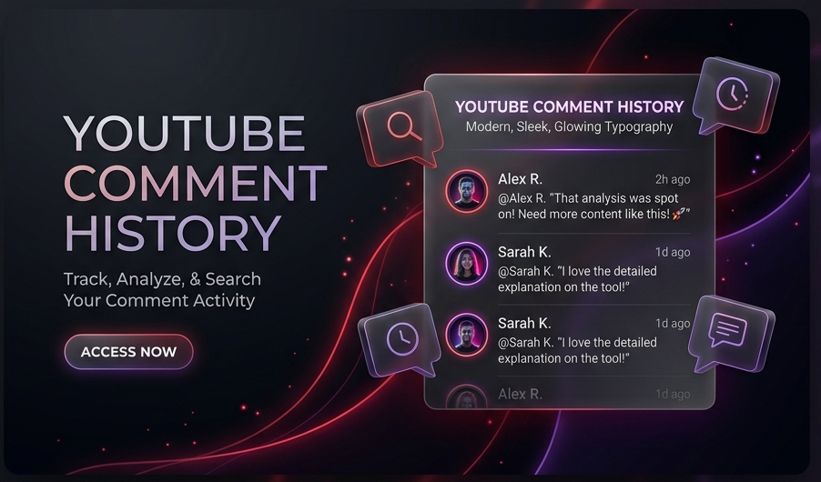

YouTube Comment History:
How to See All Your Past Comments
Ever left a comment on a YouTube video and couldn't find it later? You're not alone. YouTube doesn't make it easy to find your old comments. We'll help you get there — either with one quick link or a simple step-by-step guide.
See Your Comments Right Now
Click the button below to go straight to your YouTube comment history page on Google. No need to dig through menus — this link takes you directly there. You'll need to be signed into your Google account.
View My YouTube Comments → 🔒 This is a safe, official Google link. It opens your own Google account page — nothing shady.
How to Find Your YouTube Comments Step by Step
If you'd rather do it yourself, here's how. Pick whether you're on a computer or phone and follow along.
Step-by-Step Desktop Guide
-
1
Go to YouTube & Sign Into the Right Account
Open YouTube.com in your browser and make sure you're signed in. If you have more than one YouTube channel or Google account, click your profile picture in the top-right corner, tap "Switch account," and pick the one you used to write those comments.
-
2
Open the History Page
Click the three-line menu (☰) in the top-left corner of YouTube. A sidebar will slide open. Click on "History" from the list.
-
3
Go to the Comments Section
On the History page, look at the right side of the screen. You'll see a panel called "Manage all history." Click on "Comments" there. If your browser window is too narrow to show this panel, try making it wider or scroll down to find it.
-
4
Browse, Edit, or Delete Your Comments
A new tab will open showing all your past YouTube comments, with the newest ones at the top. Click on any comment to go to that video. If you want to remove a comment, just click the "X" next to it — but be careful, deleted comments can't be brought back.
Step-by-Step Mobile App Guide
-
1
Open YouTube App Settings
Open the YouTube app on your phone. Tap the "You" tab at the bottom-right corner, then tap the gear icon (⚙️) in the top-right to open Settings.
-
2
Tap "Manage All History"
Scroll down in Settings and tap "Manage all history." If you have multiple accounts on your phone, pick the right one when asked.
-
3
Go to the Interactions Tab
You'll land on a Google My Activity page. At the top, you'll see tabs like "History" and "Interactions." Tap on "Interactions."
-
4
Open Comments & Replies
Scroll down until you see "Video interactions." Under that, tap "Comments & replies."
-
5
View or Delete Your Comments
You'll now see a list of all the comments you've ever made on YouTube. Tap any comment to go to that video, or tap the "X" to delete it for good.
Common Questions
Quick answers about your YouTube comment history.
No. Once you delete a comment — or if YouTube or the video creator removes it — it's gone for good. There's no way to get it back.
This usually happens when you have more than one YouTube channel or Google account. The page might be showing the wrong one. Go back to YouTube, click your profile picture, tap "Switch account," pick the right channel, and try again.
The comment history page doesn't have its own search bar, but there's a workaround. Load as many comments as you can by scrolling down, then press Ctrl+F (or Cmd+F on Mac) and type what you're looking for.
Yes! Go to takeout.google.com, uncheck everything except "YouTube and YouTube Music," make sure "comments" is selected, and export. You'll get a file with all your comments that you can save on your computer.
Almost right away. When you post a comment, it shows up in your history within seconds. If you edit a comment later, the text updates but the original date stays the same.
No. Your Google My Activity page is completely private — only you can see it when you're logged in. That said, your individual comments on videos are still visible to anyone watching those videos.
There are a few reasons this can happen: the video was deleted or made private by the creator, the creator blocked your channel, or YouTube's spam filter removed the comment automatically.